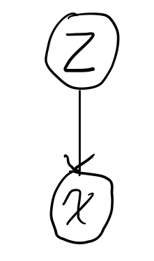
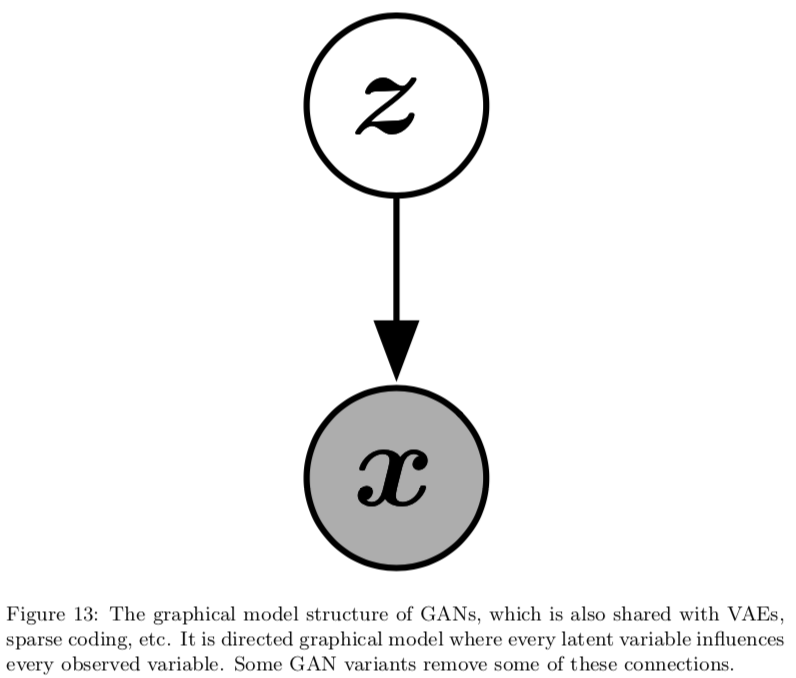

Week 12: General Adversarial Networks (GANs)¶
Assigned Reading¶
- NIPS 2016 Tutorial: Generative Adversarial Networks; Goodfellow (2016)
- Generative adversarial networks; Goodfellow et al. (2014)
In the first half of this lecture, we will review the generative models that we have discussed so far.
Generative Models, a Review¶
Generative models make the assumption that your data was generated from some distribution
This is the distribution we will attempt to learn. More specifically, we want to learn a model, P_{model}, that represents an estimate of P_{data}. If we have done our job correctly, then samples from our model
should look like samples from our data. The density P_{model} can be
- explicitly defined
- approximated by random sampling from our model.
So far, we have only looked at models of the first type, sometimes referred to as explicit density models.
As an example of the simplest possible model of the second type, sometimes referred to as implicit density models, imagine we had a sampler:
This perhaps is the most trivial generative model we could define. Clearly, this model has no "understanding" of the distribution that generated our data. But what does it mean to "understand" a data distribution?
- the ability to generate new data
- the ability to smoothly interpolate between data points x_i \rightarrow x_j
- the ability to generate samples representing "underlying features of variation"
Tip
For the last point, think of the example of generating images. We might expect a sampled images from a good model to contain variation in the lighting, or camera angle.
We have previously discussed auto-encoders, which achieve this "understanding" of our data via compression.
Of course, this begs the question: Why do we want our models to be able to "understand" a data distribution in the first place?
- Samples from high dimensional distributions are useful and serve as an excellent test of our ability to represent and manipulate high-dimensional probability distributions (import objects in a wide variety of applied math and engineering domains).
- Model-based RL makes use of generative models.
- Generative models can be trained with missing data and can provide predictions on inputs that are missing data (e.g. semi-supervised learning)
- Generative modals enable machine learning to work with multi-modal outputs (for many tasks, a single input may correspond to many different correct answers, each of which is acceptable).
- Finally, many tasks intrinsically require realistic generation of samples from some distribution, e.g.
- single image super-resolution
- art creation
- image-to-image translation
Prototypical Generative Model¶
The prototypical generative model follows the following procedure:
- Sample some noise, z \sim p(z)
- Pass this noise through a model, G
- Get a sample, x from G(z)

In VAEs, we saw that
Maximum Likelihood Estimate¶
Maximum likelihood estimate is how we have trained all the generative models we have seen thus far.
The basic idea is to:
- Define a model which provides an estimate of a probability distribution parameterized by parameters \theta
- Define a likelihood function that represents the probability of our data and train our parameters to maximize this likelihood
e.g. for the i.i.d case:
which is equivalent to the minimizing the D_{KL} between P_{data}(x) and P_{model}(x ; \theta)
If we were able to do this precisely, and if P_{data} lies within the family of distributions P_{model}(x ; \theta), then the model would recover P_{data} exactly. In practice, we do not have access to P_{data} itself, but only to a training set consisting of m samples from P_{data}. We uses these to define \hat P_{data}, an empirical distribution that places mass only on exactly those m points, approximating P_{data}. Minimizing the D_{KL} between \hat P_{data} and P_{model} is exactly equivalent to maximizing the log-likelihood of the training set.
Explicit Density Models¶
In explicit density models (i.e., the models we are discussing and have been discussing the entire course) define an explicit density function P_{model}(x ; \theta). For these models, maximization of the likelihood function is straightforward: we simply plug the models definition of the density function into the expression for likelihood and follow the gradient uphill.
The main difficulty present in explicit density models is designing a model that can capture all of the complexity of the data to be generated while still maintaining computational tractability.
- careful construction of models whose structure guarantees their tractability
- models that admit tractable approximations to the likelihood and its gradients
Tractable examples include:
- Fully Visible Belief Nets (96, 98)
- WaveNet (2016)
In the intractable case, we use variational (e.g. VAEs) or MCMC approximations to get at \log p_\theta(x).
Generative Model Goal¶
The goal of generative models, in short, is to produce samples similar to P_{data}. But do we really need maximum likelihood estimations to achieve our goals?
Tip
Everything up until this point was considered review. Everything that follows is new content.
Implicit Density Models¶
In implicit density models, we do not define P_{model}(x; \theta) explicitly. Instead, we interact with P_{model} through samples.
A taxonomic tree of generative models is shown below:

But how do we train it? No density means no likelihood evaluation. We will look at a specific instance of implicit density models known as Generative Adversarial Networks.
General Adversarial Network (GAN) Approach¶
In the general adversarial approach, we do not have likelihoods, only samples. The idea is based on an adversarial game and pulls heavily from game theory.
The basic idea of GANs is to set up a game between two players:
- One of them is called the generator (G_{\theta_G}). The generator creates samples that are intended to come from the same distribution as the training data.
- The other player is the discriminator (D_{\theta_D}). The discriminator examines samples to determine whether they are real or fake.
The discriminator learns using traditional supervised learning techniques, dividing inputs into two classes (real or fake). The generator is trained to fool the discriminator. Both are almost always modeled as neural networks (and are therefore differentiable w.r.t their outputs). Once training is complete, we throw away the discriminator.
Tip
We can think of the generator as being like a counterfeiter, trying to make fake money, and the discriminator as being like police, trying to allow legitimate money and catch counterfeit money. To succeed in this game, the counterfeiter must learn to make money that is indistinguishable from genuine money, and the generator network must learn to create samples that are drawn from the same distribution as the training data.
Formally, GANs are structured as a probabilistic model containing latent variables z and observed variable x

to sample from the model:
- first sample z \sim p(z) ; where p(z) is some prior distribution
- then x = G(z) \sim P_{model}
notice that we never explicitly define a distribution P_{model}(x; \theta). Contrast this with VAEs, where to sample from the model:
- first sample z \sim q_\phi(z | x) for some input x
- then using the encoder, compute \theta = f(z)
- finally, using the decoder, sample x \sim p_\theta(x | z)
notice that we explicitly define a distribution (p_\theta(x | z)) and sample from it.
Adversarial Game, the Specifics¶
In the adversarial game, both players have cost functions that are defined in terms of both players’ parameters
- The discriminator wishes to minimize J^{(D)}(\theta_D, \theta_G) and must do so while controlling only \theta_D.
- The generator wishes to minimize J^{(G)}(\theta_D, \theta_G) and must do so while controlling only \theta_G.
Because each player’s cost depends on the other player’s parameters, but each player cannot control the other player’s parameters, this scenario is most straightforward to describe as a game rather than as an optimization problem
Training Procedure¶
The training process consists of simultaneous SGD. On each step, two minibatches are sampled: a minibatch of x values from the dataset and a minibatch of z values drawn from the model’s prior over latent variables, e.g.,
- x \sim P_{data}
- z \sim p(z) \Rightarrow x \sim P_{G(z)}
Then two gradient steps are made simultaneously: one updating \theta_D to reduce J^{(D)} and one updating \theta_G to reduce J^{(G)}.
Cost Functions¶
Several different cost functions may be used within the GANs framework. All of the different games designed for GANs so far use the same cost for the discriminator, J^{(D)}. They differ only in terms of the cost used for the generator, J^{(G)}.
The Discriminator’s Cost¶
The cost used for the discriminator is (almost) always:
This is just the standard cross-entropy cost that is minimized when training a standard binary classifier with a sigmoid output. The only difference is that the classifier is trained on two mini-batches of data; one coming from the dataset, where the label is 1 for all examples, and one coming from the generator, where the label is 0 for all examples.
Optimal Discriminator Strategy¶
Our goal is to minimize
in function space, specifying D(x) directly. We begin by assuming that both P_{data} and P_{model} are nonzero everywhere.
Note
If we do not make this assumption, then some points are never visited during training, and have undefined behavior.

To minimize J^{(D)} with respect to D, we can write down the functional derivatives with respect to a single entry D^{(x)}, and set them equal to zero:
By solving this equation, we obtain
The discriminator (dashed blue line) estimates the ratio between the data density (black dots) and the sum of the data and model densities. Wherever the output of the discriminator is large, the model density is too low, and wherever the output of the discriminator is small, the model density is too high. Estimating this ratio is the key approximation mechanism used by GANs
Note
We can't actually compute D^\star(x) directly but it illustrates how the discriminator achieves optimal behavior.
Optimal Generator Strategy¶
So far we have specified the cost function for only the discriminator. A complete specification of the game requires that we specify a cost function also for the generator.
The simplest version of the game is a zero-sum game, in which the sum of all player’s costs is always zero. In this version of the game,
Because J^{(G)} is tied directly to J^{(D)}, we can summarize the entire game with a value function specifying the discriminator’s payoff:
Zero-sum games are also called minimax games because their solution involves minimization in an outer loop and maximization in an inner loop:
Where we want to maximize \theta_D such that
- D_{\theta_D}(x) = 1
- D_{\theta_D}(G(z)) = 0
and minimize \theta_G such that
- D_{\theta_D}(G_{\theta_G}(z)) \rightarrow 1